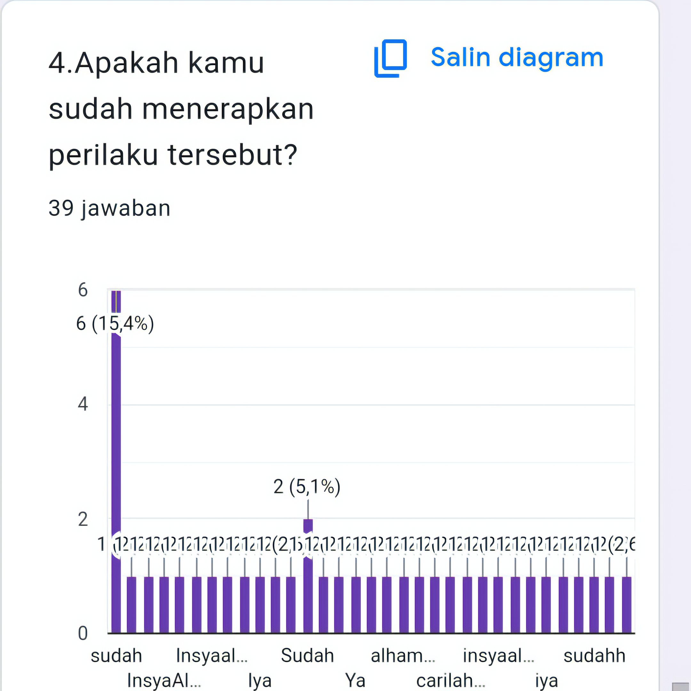

Tujuan Program
Tujuan dari diadakannya program development broadcasting ini untuk meningkatkan karakter sesuai dengan standar SMA IT Fithrah Insani.
Teknis Pelaksanaan
Kegiatan ini dilaksanakan setiap 1 bulan sekali di minggu ke-2 hari Kamis.
Siswa/i diwajibkan untuk mengisi Google Formulir berdasarkan materi yang telah disampaikan oleh OSIS melalui speaker di SMA IT Fithrah Insani.
Dokumentasi Kegiatan
Sesi penyampaian materi oleh OSIS
Interaksi siswa dengan materi

Pengisian formulir evaluasi